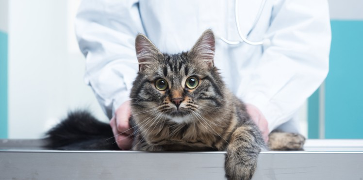

Maladies du chat

-
Conjonctivite du chat
- La conjonctivite du chat est l'inflammation de la conjonctive, une muqueuse recouvrant le blanc de l'œil et la face postérieure de la paupière du chat. Une simple poussière dans l'œil peut provoquer l'irritation de cette délicate membrane, mais il peut aussi arriver que la conjonctivite soit le signe d'une infection plus grave. La plupart du temps, quand un chat souffre d'un seul œil, il s'agit d'une égratignure ou d'une poussière qui irrite sa conjonctive. Néanmoins, une chlamydiose ou une mycoplasmose peuvent également atteindre un œil puis s'étendre à l'autre (après une semaine environ). En revanche, quand les deux yeux sont touchés par une conjonctivite, on a souvent affaire à une infection liée aux voies respiratoires supérieures. Bien entendu, le traitement dépendra du diagnostic, mais dans la plupart des cas, une crème ou des gouttes seront nécessaires.
-
Grippe du chat
- La grippe féline est une infection virale du type de la grippe, affectant les chats. On ne doit pas la confondre avec d'autres maladies du chat telles que le Coryza, appelé aussi grippe féline.
-
Gale oculaire
- La gale des oreilles, ou otacariose, ou otite auriculaire, est une maladie de peau animale d'origine parasitaire causée par un acarien : chez le chien et le chat elle est due à Otodectes cynotis, un acarien parasite de la famille des épidermoptidés vivant sur la peau et se nourrissant de déchets épidermiques et de cérumen. Il est localisé dans le conduit auditif et provoque une lésion de la peau. Chez le lapin, la gale auriculaire est due à une espèce proche, Psoroptes cuniculi.
-
Encéphalite
- Une encéphalite est une inflammation de l'encéphale (cerveau, tronc cérébral et/ou cervelet).
-
Diabète des chats
- Le diabète sucré (ou diabète par abus de langage) est une maladie liée à une défaillance des mécanismes biologiques de régulation de la glycémie (concentration de glucose dans le sang) menant à une hyperglycémie. Cette maladie se manifeste par des symptômes propres au diabète (syndrome polyuro-polydipsique) et par des lésions d'organes tels la rétine, les reins, les artères coronaires, etc., dues à la toxicité de l'acétone produite lors d'une dégradation rapide des graisses arrivant en cas de défaillance de l'insuline menant à une hyperglycémie majeure.
-
Rage
- Cette maladie virale se traduit par des troubles du système nerveux : comportement anormal, agressivité, incapacité à avaler… Incurable et mortelle, elle peut être transmise à l’homme. La vaccination de votre chat rendue obligatoire par la loi du 26 décembre 2007 pour les chats voyageant hors du territoire français est un moyen efficace de prévenir la rage. Renseignez-vous auprès de votre vétérinaire.
-
Typhus du chat
- Très contagieuse, cette maladie virale provoque des diarrhées, des vomissements, de la fièvre et une mortalité très importante surtout chez les chatons. Un traitement existe, mais il ne fonctionne que s’il est précoce. La vaccination est très efficace.
-
La leucose féline
- C’est un virus qui entraîne des tumeurs et des maladies du sang. La période entre l’infection par le virus et l’apparition des signes cliniques peut durer plusieurs années. L’infection se fait par contact avec des animaux porteurs du virus qui n’expriment pas obligatoirement la maladie. Une analyse de sang permet à votre vétérinaire de déterminer si votre chat est porteur du virus. Il n’est pas recommandé de laisser ensemble des animaux sains et porteurs. Un vaccin existe, vous pouvez en parler à votre vétérinaire.
-
Le Feline Immunodeficiency Virus (F.I.V)
- Transmis par morsure, ce virus non transmissible aux humains entraîne chez le chat un syndrome d’immunodéficience très comparable à celui rencontré chez l’homme. L’incubation peut être longue, mais un vétérinaire peut identifier les chats porteurs.
-
La Péritonite Infectieuse Féline (P.I.F)
- Cette maladie virale infecte surtout les chats en élevage ou regroupés en grand nombre. Le diagnostic ne peut être établi avec certitude et il n’existe pas aujourd’hui de traitement. Le seul moyen de réduire le risque de contamination est de suivre les bonnes pratiques d’élevage conseillées par votre vétérinaire.